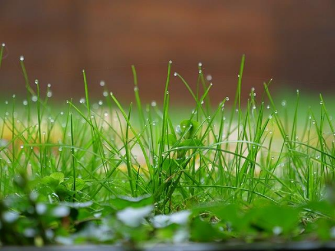
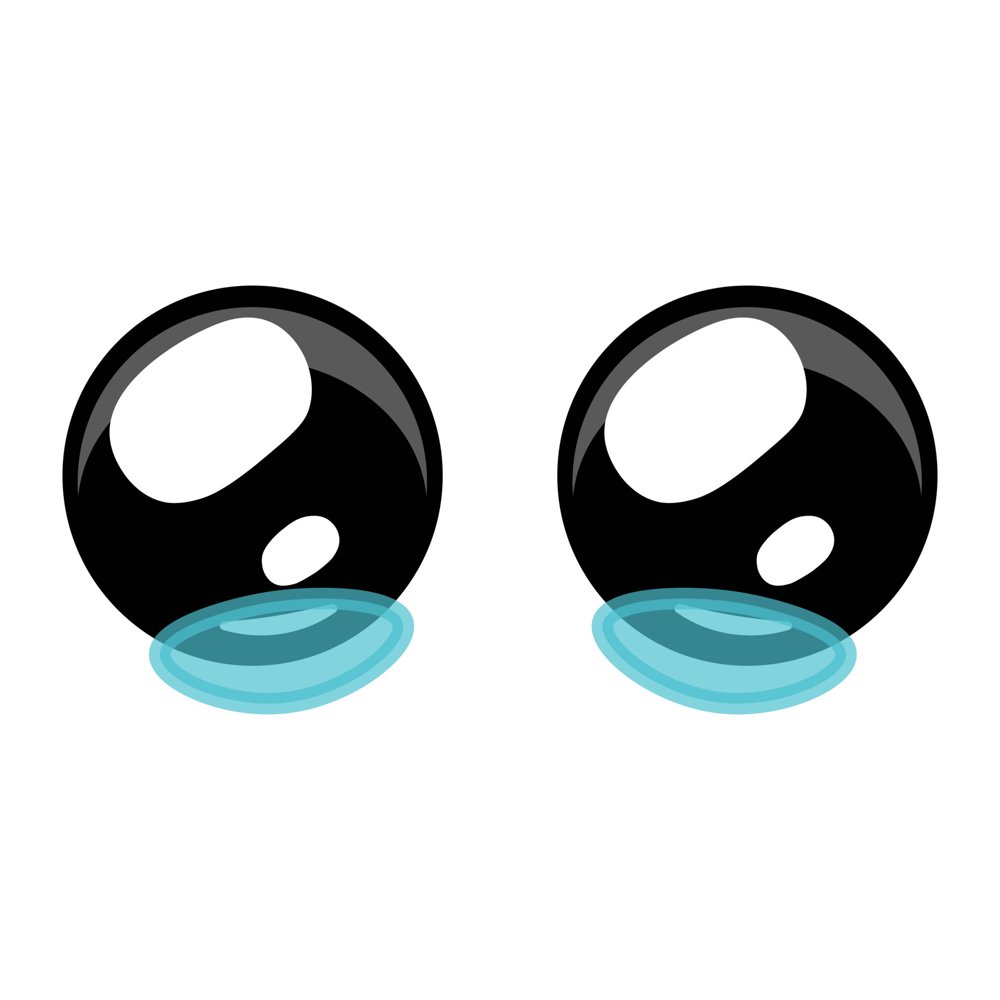

O grêmio da E.E Leme do Prado decidiu organizar um festival para culminância das eletivas do 2º semestre. Você é um dos membros da organização e precisa tomar algumas decisões para que tudo corra bem. Suas escolhas vão determinar o sucesso do evento! E ai, está preparado?
Então vamos lá! Começaremos pensando no cardápio. O festival terá um grande buffet. Você precisa decidir a quantidade de comida a ser comprada. Qual será sua atitude?

Não posso crer que designei a pessoa errada para uma missão tão importante...
No topo do Pico da Tijuca, você encontra uma antiga inscrição apontando que a próxima pista está localizada no Amazonas.

Você decide que a aventura é grande demais e volta para casa, mas sempre se pergunta o que teria encontrado.